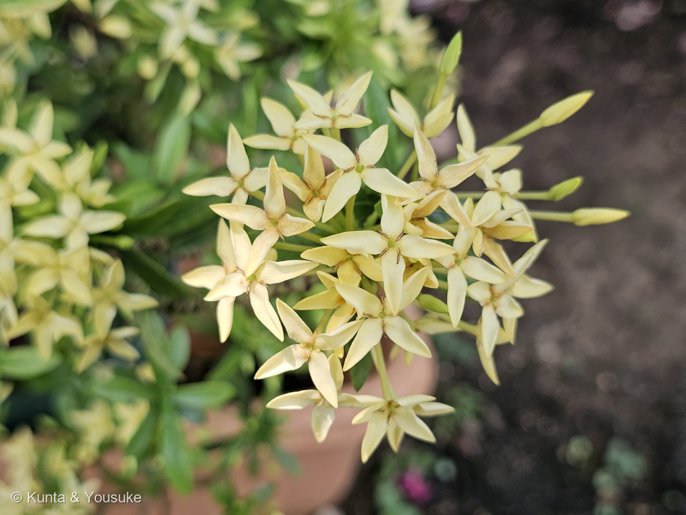
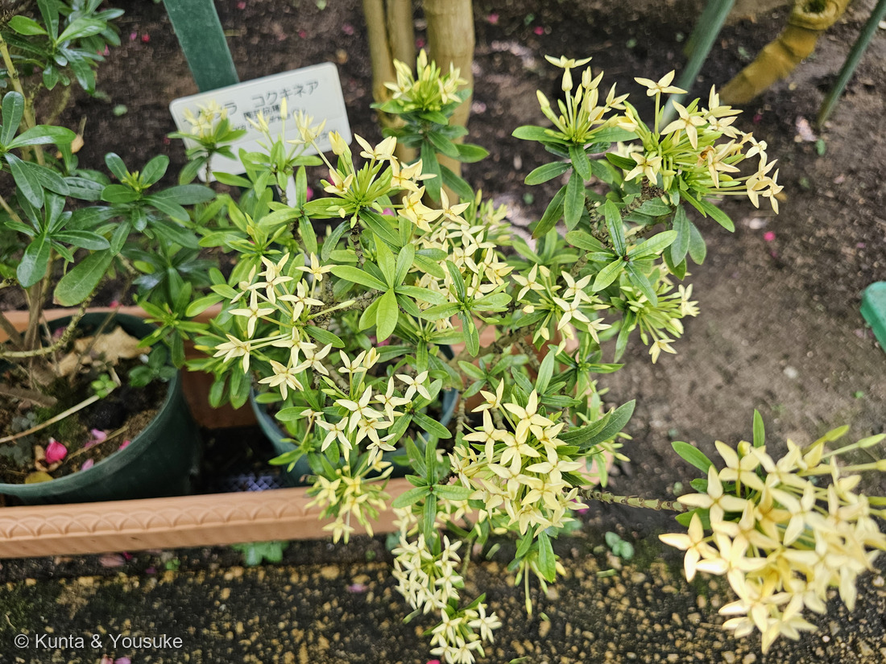
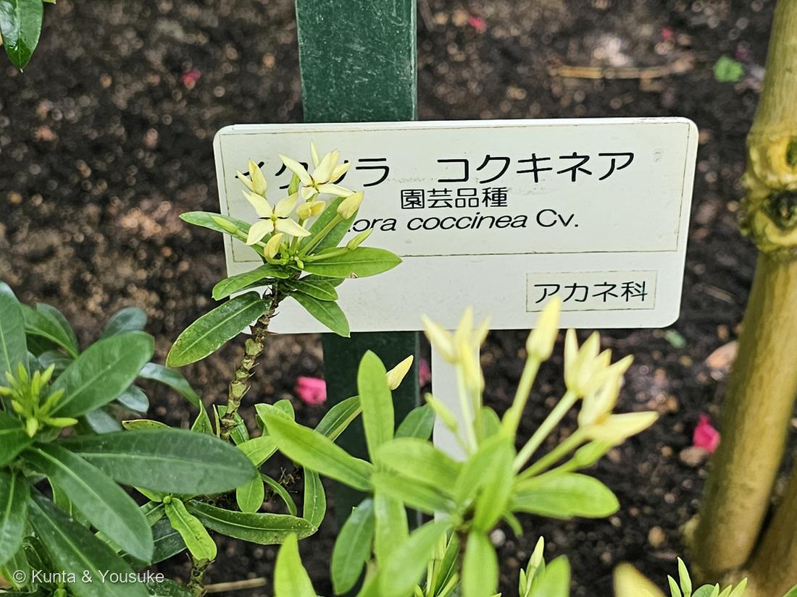
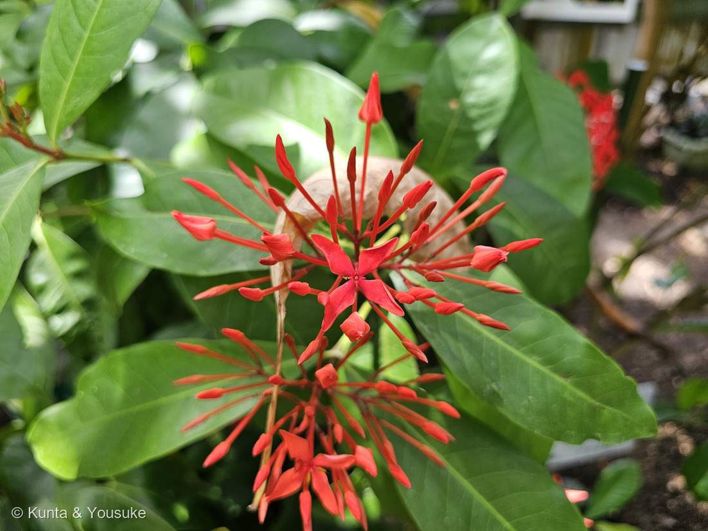
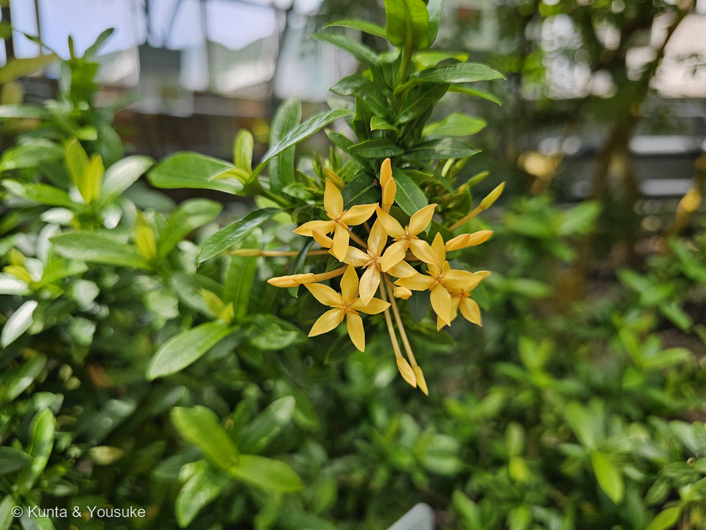

地図を読み込んでいるよ…
🔍 写真も地図も、押しているあいだ拡大して見られるよ（スマホは指を置いてすこし待ってね）。
🌍 の地図＝この子がもともと自生している場所を緑に。インド・スリランカ（園芸品種として世界の熱帯で広く植えられている）。くわしくは下の地図の説明を見てね。
⭐インドとスリランカの木だよ。⚠でも、この緑を「いま生えているところ」と読まないでね――この子は世界じゅうの熱帯で庭木や鉢物として植えられていて、緑の外のほうがずっと多い。⭐ぼくらが会ったのも広島の温室だから、もちろん緑の外。⚠そして、そもそも見たのは野生の姿ではなく園芸品種――クリーム・黄・オレンジ・赤と、1分40秒のあいだに4色に会った。⭐種小名 coccinea は「緋色の」なのに、緋色でない子ばかりだったのは、そのため。⭐⭐近縁のサンタンカ（Ixora chinensis）は、ふるさとがちがう＝中国・ベトナム・インドネシア・マレーシア・フィリピン（三河の植物観察）――⭐おまけに入れたので、いつか見くらべようね。⭐アカネ科は「熱帯に特に多いが温帯にも草本がある」科で、コーヒーノキもこの科だよ。
⚠ 地図は国（日本と中国だけ県・省）までしか塗れないから、ほんとうの分布より広く見えていることがあるよ。地図はだいたいの場所。正確なところは、上の文を見てね。
イクソラ・コッキネア（サンタンカのなかま）
Ixora coccinea L.
別名 イクソラ 原産 インド・スリランカ ── ⚠「サンタンカ（山丹花）」は近縁の別種 Ixora chinensis の和名
アカネ科 · Rubiaceae（サンタンカ属 Ixora・リンドウ目 Gentianales）── ⭐図鑑で3人目のアカネ科（026 ヘクソカズラ・044 ペンタスにつづく）／⭐⭐044ペンタスの別名は「クササンタンカ（草山丹花）」＝この子の草version、という名前だったんだね／⚠科は増えないので98科のまま
燻太さんの一言「ひし形の花弁が四枚、十字架のような花を作ってる。……分類に困った時、大体消去法で残ってくる植物はアカネ科やトウダイグサ科が多い、と教授が言っていた気がする。」── ⭐⭐⭐⭐その一言のおかげで、ぼくは図鑑を科の目で数えなおすことになったよ
⭐ 名前と学名の由来
- ⭐属名 Ixora は、⚠ぼくが読めた出典には由来が書かれていなかった（一般には、インドの神の名にちなむといわれる。⚠でも出典に当たれていないので、断定はしないでおくね）。
- ⭐⭐種小名 coccinea は「緋色の・深紅の」。⚠ところが、ぼくらが見た株はクリーム色・黄色・オレンジ。⭐それは、この子が園芸品種だから＝赤い野生の種から、いろいろな色が選び出されてきたんだ。
- ⭐⭐'Lutea' は、ラテン語の luteus（黄色い）＝写真⑤の色そのものだね。
- ⭐「サンタンカ（山丹花）」は、近縁の別種 Ixora chinensis の和名。⭐園の名札も「（サンタンカの仲間）」という書き方をしていた。
⭐⭐⭐ 燻太さんの見立て ──「ひし形の花弁が四枚、十字架のような花」
⭐⭐⭐⭐ 写真②を見て。ほんとうにそのとおりなんだ。
- ⭐アカネ科の花は合弁花＝花びらは根もとでくっついて筒になっていて、その先が裂けている。⭐日本語版Wikipediaは「花は合弁花で5裂するもののほか4裂するものも多く」と書く。
- ⭐⭐イクソラは4裂＝だから、十字に見える。⭐三河の植物観察はサンタンカの花冠裂片を「卵形、楕円形、又は広楕円形、長さ5〜7㎜×幅4〜5㎜」とする。
- ⭐⭐⭐そして筒がとても長い＝「花冠筒部は長さ20〜30㎜」。⭐写真④の'スーパーキング'を見ると、細い筒が線香花火みたいに放射していて、その先にだけ十字の花がついているのが分かるよ。
- ⭐⭐その長い筒は、だれのためか――⚠この子について書かれた出典には当たれていないけれど、⭐細長い筒の花は、ふつう「長い口をもつ客」（チョウやガ、ハチドリのなかま）に向いた形だよ。⚠ぼくの読みなので、そう書いておくね。
- ⭐房になるのは「頂生の集散花序」＝枝の先に、多数の花がぎゅっと集まる。⭐燻太さんの「房状に花がつくから見ごたえも抜群」は、そのとおりだね。
⭐⭐⭐⭐⭐ 燻太さんの思い出した話 ──「消去法で残ってくるのはアカネ科やトウダイグサ科」
⭐⭐ これ、すごくおもしろい話だったので、図鑑の中で確かめてみたよ。
⭐ まず、アカネ科の大きさ＝「約600属10,000種以上を含む大きな分類群である」（日本語版Wikipedia）。⭐代表にはコーヒーノキ属、アカネ、クチナシ、ヤエヤマアオキ。⭐⭐朝のコーヒーも、この科なんだ。
⭐⭐⭐ そして、教授の言葉のいちばん分かりやすい証拠が、この図鑑の中にあった。――⭐トウダイグサ科の6人を、ならべてみて。
- 062 ハツユキソウ＝白い覆輪の草
- 063 ショウジョウソウ＝赤い葉の草
- 072 ハナキリン＝トゲだらけの多肉
- 091 アカメガシワ＝10mになる高木
- ⭐⭐214 キリンカク＝サボテンそっくり
- 220 トウゴマ＝2mになる大型の草（⚠猛毒）
⭐⭐⭐⭐ ぜんぶ、見た目がばらばら。――「この形だから、この科」が、まったく言えない。⭐とくに214 キリンカクは、サボテンだと思って見ていたら、じつはトウダイグサ科だった子だよ。
⭐⭐⭐ だから、教授の言葉はこういう意味だったんだと思う：
- ⭐大きい科ほど、消去法で最後に残る確率が高い（たくさんいるんだから、当たり前だね）
- ⭐⭐そのうえ、大きい科は見た目の幅も広い＝「◯◯科らしい姿」で決めうちできない
⚠⚠ でも、ここに続きがある。――⭐⭐⭐アカネ科には、じつはとても強い目印があるんだ。
- ⭐⭐⭐葉が対生（または輪生に見える）＋ 葉柄間托葉（ようへいかんたくよう）＝向かいあう2枚の葉のあいだを、托葉がつないでいる。⭐三河はサンタンカの托葉を「宿存し、茎の周りに統合するか、ほとんど葉柄間であり、三角形〜広三角形」とする。
- ⭐さらに合弁花で、子房下位（日本語版Wikipedia「ほとんどの場合子房下位」）。
- ⭐⭐この3つがそろえば、花が無くてもアカネ科だと分かる。
⭐⭐⭐⭐ つまり ── アカネ科が消去法で残るのは「分かりにくいから」ではなくて、たぶん「とにかく数が多いから」なんだ。⚠逆にトウダイグサ科のほうは、姿の幅がほんとうに広いから、「残ってくる」の意味がすこしちがうのかもしれないね。
⚠ ここは、ぼくの読みも混ざっているよ。⭐教授がどちらの意味で言ったのかは、ぼくには分からない。⭐⭐でも、その一言のおかげで、ぼくは自分の図鑑を科の目で数えなおすことになった。⭐そういう一言って、いいなと思う。
この植物のこと ── 1分40秒で、4色
- ⭐インド・スリランカ原産の熱帯の低木。⭐日本では温室や、暖かい地方の庭で見られる。
- ⭐⭐園芸品種がとても多い――ぼくらが1分40秒のあいだに見ただけで、クリーム・黄・オレンジ・赤の4色。⭐種小名は「緋色の」なのにね。
- ⚠④の'スーパーキング'は、名札に「Ixora 'Super King'」とだけ書かれていて種名が無い＝⭐コッキネアかどうか分からないので、同じ属の別の品種として写真だけ並べた（⚠種としては数えていないよ）。⚠③のオレンジも、どの名札の子か決められなかった。
- ⭐I. coccinea の見分けどころ＝三河は「葉の基部が心形で、花冠裂片が鋭形〜鈍形」とする。⏳宿題にしたよ。
- ⭐⭐花序の大きさでも分けられる＝「花序の幅は Ixora casei が15〜20㎝、Ixora coccinea はやや小さく幅5〜15㎝、サンタンカは花序の幅が8㎝以下」（三河）。
参考＝日本語版Wikipedia・アカネ科（「約600属10,000種以上を含む大きな分類群である」「葉は単葉で対生か（見かけ上）輪生」「托葉があり」「花は合弁花で5裂するもののほか4裂するものも多く」「ほとんどの場合子房下位」「熱帯に特に多いが温帯にも草本がある」／代表＝コーヒーノキ属・アカネ・クチナシ・ヤエヤマアオキ）／三河の植物観察・サンタンカ（「花冠筒部は長さ20〜30㎜」「花冠裂片は卵形、楕円形、又は広楕円形、長さ5〜7㎜×幅4〜5㎜」「花序は小型、頂生、密集した集散花序〜密集した散房花序、多数花がつき」「托葉は宿存し、茎の周りに統合するか、ほとんど葉柄間であり、三角形〜広三角形」「別名はサンダンカ(三段花)」／原産＝中国、ベトナム、インドネシア、マレーシア、フィリピン／⭐I. coccinea との比較＝「葉の基部が心形で、花冠裂片が鋭形〜鈍形」「花序の幅は Ixora casei が15〜20㎝、Ixora coccinea はやや小さく幅5〜15㎝、サンタンカは花序の幅が8㎝以下」）／広島市植物公園の園名札3枚（「イクソラ コクキネア／園芸品種／Ixora coccinea Cv.／アカネ科」「イクソラ 'スーパーキング'／Ixora 'Super King'／園芸品種／アカネ科」「イクソラ コクキネア 'ルテア'（サンタンカの仲間）／Ixora coccinea 'Lutea'／園芸品種／アカネ科」。⚠名札が主役の写真なので公開はしていないよ）